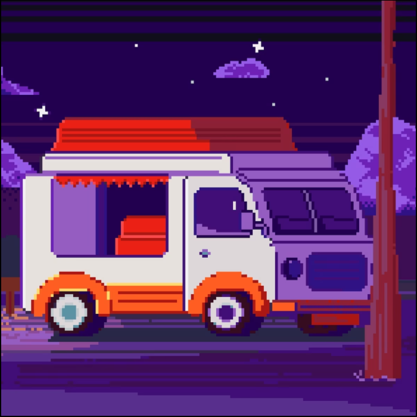

Фритрек и нулевой спринт: Подготовка к работе
<start>

Это было самое начало пути. На этом этапе важно было проникнуться основами и настроиться на учёбу. И, возможно, подумать, как новые знания могут повлиять на ваше будущее.
Я был полон сил и энергии. Было огромное желание учиться, знакомиться, общаться со студентами и преподавателями. Поначалу было непривычно, но очень интересно.